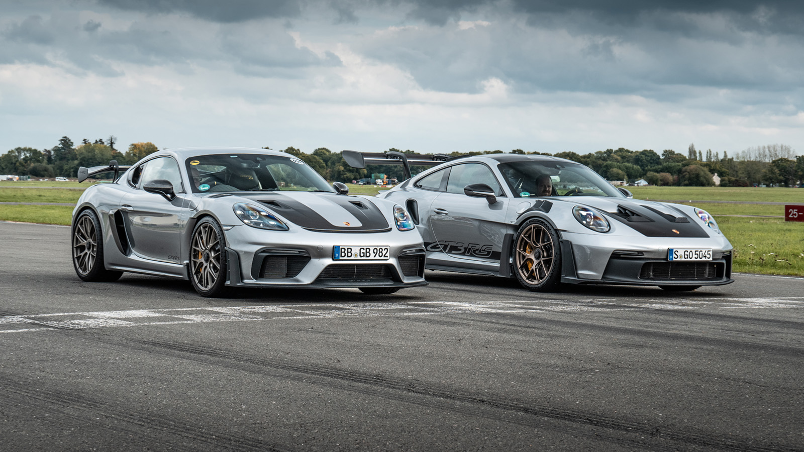
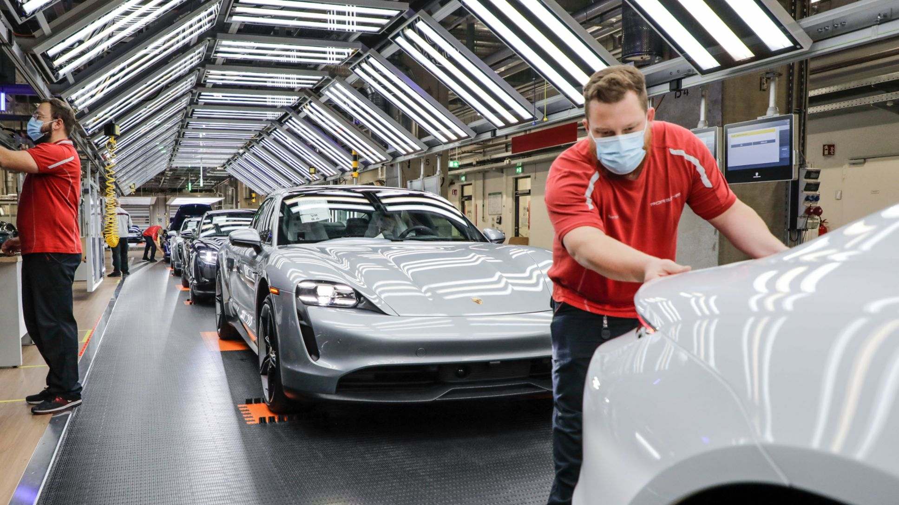

Porsche/Порше
Мотото на марката е „Няма заместител“.
Автомобилният стил на „Porsche“ е уникален и е
израз на неподражаемост, изисканост и пъргавина. Рекламно
лице на „Porsche“ е руската тенисистка Мария Шарапова.
Фирмата производител заедно с търговската марка са основани
от Фердинанд Порше през 1931 г. От 1
август 2012 г. те са част от групата на „Volkswagen“
АД. През май 2006 г. след проведено проучване
Porsche е наградено с престижното звание „Най-престижна
марка автомобили“. Анкетирани са повече от 500
домакинства с минимален годишен приход $
200 000 и състояние възлизащо на поне $ 720 000.„Каталогът“ на
„Porsche“ започва със спортния роудстър Boxter и стига до
най-популярния им и култов модел 911.Cayman е спортна кола с
твърд покрив (не кабрио) от класа на Boxter („Бокстер“),
но в малко по-висок ценови диапазон. Cayenne („Кайен“) е
луксозният SUV, който компанията пуска в
производство през 2002 г. Carrera GT („Карера“)
е „супер-колата“, която е пусната през май 2004 г. Фирмата
произвежда и луксозна лимузина с името Panamera. Култовият
модел на марката е 911 Turbo.